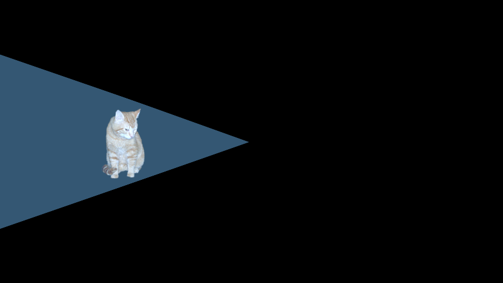

Aiming
Ported from Microsoft's XNA 4.0 Aiming sample.
Source for this sample on GitHub ↗

Play ▸Opens in a new tab. Move the cat with the arrow keys or hold the left mouse button to guide it.
About this sample
The cat moves around a dark scene while a spotlight turns smoothly to face it. The sample demonstrates trigonometric aiming, a maximum turn speed and additive blending for the beam of light.
Controls
| Action | Keyboard | Mouse | Gamepad |
|---|---|---|---|
| Move the cat | Arrow keys | Hold left button at the destination | Left thumbstick or D-pad |
| Exit | Escape | — | Back |